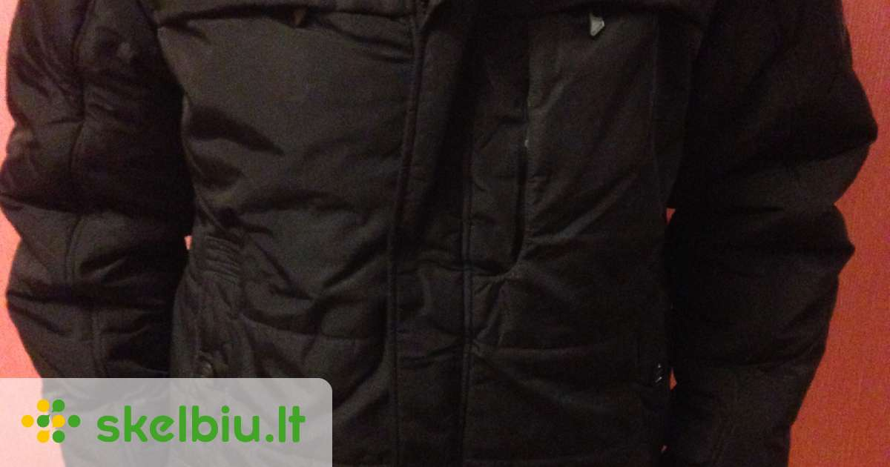
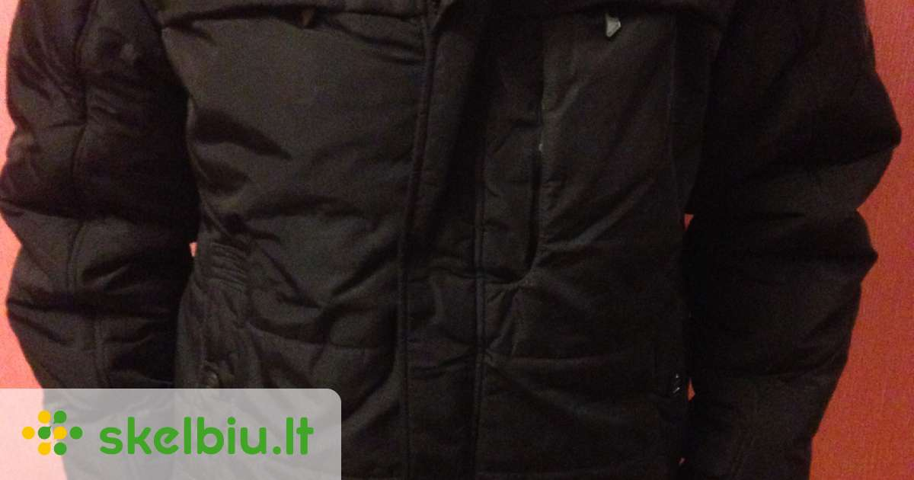

Vyriškos žieminės striukės
2020.10.30 03:25

+37062030000 Pristatymo informacija Prekių grąžinimas Dovana Prisijungti Registracija Užsakymų istorija Pageidavimai ( 0 ) 0 prekė(s) - 0.00 €
Jūsų prekių krepšelis tuščias
Menu VyramsApranga su užrašais
Aprangos deriniai
Diržai
Džemperiai
Džemperiai be gobtuvo Džemperiai su gobtuvu PalaidinėsKelnės
Klasikinės kelnės Laisvalaikio kelnės Džinsai ir JogeriaiKepurės ir pirštinės
Liemenės
Marškinėliai
Marškinėliai su užrašais POLO marškinėliai Vienspalviai marškinėliaiMarškiniai
Marškiniai ilgomis rankovėms Marškiniai trumpomis rankovėmisMegztiniai
Piniginės
Rankinės
Šortai bei Bridžai
Bridžai ŠortaiSportiniai kostiumai
Švarkai
Vyriški šalikai
Vyriškos kojinės
Striukės ir Paltai
Odinės striukės Paltai Rudeninės / Pavasarinės striukės Žieminės striukėsApatinis trikotažas
Nauja kolekcija -20%
Nauji sezoniniai pasiūlymai! Geriausi ir populiariausi striukių modeliai atrinkti specialiai Jums, mūsų mieli klientai! Šiuo metu turime pasiūlyti virš 200+ skirtingų modelių su didesne ar mažesne nuolaida! Pasinaudokite proga išsirinkti savo nusižiūrėtą modelį pigiau.
Rinktis naujus striukių modelius
Likučiai už super kainą
Akcija: Vyriška juodos spalvos striukė Wide 39.99 € Į krepšelį Pageidauti Palyginti -53% Akcija: Vyriška tamsiai mėlyna striukė Arto 54.00 € 25.50 € Į krepšelį Pageidauti Palyginti -34% Akcija: Vyriška tamsiai mėlynos spalvos striukė Toron 79.99 € 52.95 € Į krepšelį Pageidauti Palyginti -55% Akcija:Tamsiai mėlynos spalvos vyriška striukė Herdis 54.00 € 24.50 € Į krepšelį Pageidauti PalygintiAvalynė
Džemperiai
Kelnės
Liemenės
Marškinėliai
Marškiniai
Megztiniai
Šortai bei Bridžai
Striukės
Švarkai
+ Naujienos + AksesuaraiApyrankės
Kaklo papuošalai
Kepurės
Piniginės
Raktų pakabukai
+ Avalynė + Simbolika + Aprangos BLOG'as + Informacija Pristatymo informacija Apmokėjimo būdai Klientų atsiliepimai Stipriausi Lietuvoje Kaip žinoti dydį Apie mus Susisiekite su mumis Terminai ir sąlygos Nuolaidos Prekių grąžinimas + Pradžia Vyrams Striukės ir Paltai Žieminės striukės Vyrams - Apranga su užrašais - Aprangos deriniai - Diržai - Džemperiai - Kelnės - Kepurės ir pirštinės - Liemenės - Marškinėliai - Marškiniai - Megztiniai - Piniginės - Rankinės - Šortai bei Bridžai - Sportiniai kostiumai - Švarkai - Vyriški šalikai - Vyriškos kojinės - Striukės ir Paltai - Apatinis trikotažas Aksesuarai Avalynė Naujienos Išpardavimas Kaina Dydis S M L XL XXL XXXL Spalva Balta Bordo Chaki Geltona Juoda Kamufliažas Mėlyna Mėtinė Pilka Raudona Ruda Rusva Šviesiai mėlyna Tamsiai mėlyna Tamsiai pilka ŽaliaMokėjimas kortele
Atsiskaitykite banko kortelėmis Visa bei Mastercard
Saugus pirkimas
Mūsų turimas SSL sertifikatas užtikriną duomenų saugumą
Grąžinimo garantija
Galite grąžinti ar keisti dydį / modelį per 14 dienų!
Greitas pristatymas
Užsakymus pristatome per 2 / 4 darbo dienas
Naujausi įrašai ŽEMŲ VAIKINŲ MADOS, T.Y. 5 GUDRYBĖS MADINGAM STILIUI 2019-08-27 0 Vyriškas švarkas ir marškinėliai. Kaip juos dėvėti? 2019-08-21 0 Vyriškas stilius: švarkas ir juodos kelnės? 2019-08-21 0 PIRMOJI MOKSLO METŲ DIENA. KAIP APSIRENGTI? 2019-08-19 0 Vyriškas apatinis trikotažas 2019-08-13 0 Naujienlaiškio prenumerata Prenumeruokite naujienlaiškį ir gaukite geriausius savaitinius mūsų pasiūlymus pirmieji! Prenumeruoti Aš perskaičiau ir sutinku su Terminai ir sąlygosVyriškos žieminės striukės
Šaltas oras, sniegas ir stiprūs vėjai dažnas žiemos palydovas. Tokiomis sąlygomis neabejotinai pirmiausia norėtumėte apsisaugoti nuo šalčio, todėl išvaizda pasilieka antrame plane. Tačiau stilius ir aprangos funkcionalumas yra tas derinys, kuris padeda kurti šiuolaikinę vyrų madą. Žiema neturi būti niūri ir asocijuotis pilkumu. Mes siūlome jums rinktis stilingas ir tuo pačiu šiltas žiemines striukes:
Striukės pakos - ne tik labai madingos, bet ir funkcionalios. Puikiai apsaugosite visą savo kūną nuo žiemos šalčio; Bomber modelio striukės - skirti modeliai, kurie papildomai izoliuoti, kad apsaugotų jus nuo sušalimo, geriausiai su gobtuvu bei kailiu.
Žiemai ir šaltiems orams atėjus, be kokybiškos, šiltos striukės neišsiversi. Įsigydami vieną iš mūsų naujos kolekcijos žieminių striukių galėsite atrodyti moderniai, bei stilingai spaudžiant, bet kokiam šalčiui.
Prekių palyginimas (0) Rodyti: 25 40 50 75 100 Rūšiuoti pagal: Standartinė Pavadinimas (A - Z) Pavadinimas (Z - A) Kaina (Žema Aukšta) Kaina (Aukšta Žema) Įvertinimai (Aukščiausi) Įvertinimai (Žemiausi) Prekės kodas (A - Z) Prekės kodas (Z - A) New -32%
Vyriška tamsiai mėlyna žieminė striukė Leder
Vyriška striukė su gobtuvu.Gobtuvas padeda apsisaugoti nuo lietaus ir vėjo. Stilingas modelis ..
86.55 € 58.90 €
Į krepšelį Pageidauti Palyginti New -32%Vyriška mėlyna žieminė striukė Leder
Vyriška striukė su gobtuvu.Gobtuvas padeda apsisaugoti nuo lietaus ir vėjo. Stilingas modelis ..
86.55 € 58.90 €
Į krepšelį Pageidauti Palyginti New -33%Vyriška tamsiai mėlyna žieminė striukė Noder
Sudėtis: 100% poliesteris.Galima paklaida +/-2cm.Dydis (A) (B) (C)(D) (E)S705555..
85.95 € 57.90 €
Į krepšelį Pageidauti Palyginti New -33%Vyriška raudona žieminė striukė Noder
Sudėtis: 100% poliesteris.Galima paklaida +/-2cm.Dydis (A) (B) (C)(D) (E)S705555..
85.95 € 57.90 €
Į krepšelį Pageidauti Palyginti New -33%Vyriška juoda žieminė striukė Noder
Sudėtis: 100% poliesteris.Galima paklaida +/-2cm.Dydis (A) (B) (C)(D) (E)S705555..
85.95 € 57.90 €
Į krepšelį Pageidauti Palyginti New -30%Tamsiai mėlyna vyriška žieminė striukė Ivol
Vyriška dygsniuota žieminė striukė su gobtuvu. Užsegimas tvirtinamas užtrauktuku ir spaudėmis. Striu..
85.88 € 59.90 €
Į krepšelį Pageidauti Palyginti New -30%Juoda vyriška žieminė striukė Ivol
Vyriška dygsniuota žieminė striukė su gobtuvu. Užsegimas tvirtinamas užtrauktuku ir spaudėmis. Striu..
85.88 € 59.90 €
Į krepšelį Pageidauti Palyginti New -32%Vyriška tamsiai mėlynos spalvos striukė Skanol
Vyriška striukė su gobtuvu.Gobtuvas padeda apsisaugoti nuo lietaus ir vėjo. Striukėje yra 4 ki..
88.00 € 59.99 €
Į krepšelį Pageidauti Palyginti New -32%Vyriška juodos spalvos striukė Skanol
Vyriška striukė su gobtuvu.Gobtuvas padeda apsisaugoti nuo lietaus ir vėjo. Striukėje yra 4 ki..
88.00 € 59.99 €
Į krepšelį Pageidauti Palyginti New -32%Vyriška garstyčių spalvos striukė Skanol
Vyriška striukė su gobtuvu.Gobtuvas padeda apsisaugoti nuo lietaus ir vėjo. Striukėje yra 4 ki..
88.00 € 59.99 €
Į krepšelį Pageidauti Palyginti New -32%Vyriška chaki spalvos striukė Skanol
Vyriška striukė su gobtuvu.Gobtuvas padeda apsisaugoti nuo lietaus ir vėjo. Striukėje yra 4 ki..
88.00 € 59.99 €
Į krepšelį Pageidauti Palyginti New -32%Vyriška baltos spalvos striukė Skanol
Vyriška striukė su gobtuvu.Gobtuvas padeda apsisaugoti nuo lietaus ir vėjo. Striukėje yra 4 ki..
88.00 € 59.99 €
Į krepšelį Pageidauti Palyginti New -44%Vyriška tamsiai mėlyna žieminė striukė su gobtuvu Revol
Vyriška dygsniuota žieminė striukė su gobtuvu. Užsegama užtrauktuku. Striukės gobtuvas reguliuojamas..
88.95 € 49.99 €
Į krepšelį Pageidauti Palyginti New -34%Šviesiai pilka vyriška striukė Vatur
Vyriška striukė su gobtuvu.Gobtuvas padeda apsisaugoti nuo lietaus ir vėjo. Išskirtinis modeli..
79.70 € 52.90 €
Į krepšelį Pageidauti Palyginti New -34%Rusva vyriška striukė su gobtuvu Bomel
Vyriška striukė su gobtuvu.Gobtuvas padeda apsisaugoti nuo lietaus ir vėjo. Išskirtinis modeli..
85.85 € 57.00 €
Į krepšelį Pageidauti Palyginti New -34%Pilka vyriška striukė su gobtuvu Bomel
Vyriška striukė su gobtuvu.Gobtuvas padeda apsisaugoti nuo lietaus ir vėjo. Išskirtinis modeli..
85.85 € 57.00 €
Į krepšelį Pageidauti Palyginti New -34%Juoda vyriška striukė su gobtuvu Bomel
Vyriška striukė su gobtuvu.Gobtuvas padeda apsisaugoti nuo lietaus ir vėjo. Išskirtinis modeli..
85.85 € 57.00 €
Į krepšelį Pageidauti Palyginti New -28%Vyriška žalios spalvos žieminė striukė Finer
Vyriška žieminė striukė su gobtuvu. Striukė užsegama užtrauktuku. Nuo gobtuvo nusiima kailiukas. Str..
75.98 € 54.95 €
Į krepšelį Pageidauti Palyginti -28%Vyriška tamsiai mėlynos spalvos žieminė striukė Finer
Vyriška žieminė striukė su gobtuvu. Striukė užsegama užtrauktuku. Nuo gobtuvo nusiima kailiukas. Str..
75.98 € 54.95 €
Į krepšelį Pageidauti Palyginti -28%Vyriška juodos spalvos žieminė striukė Finer
Vyriška žieminė striukė su gobtuvu. Striukė užsegama užtrauktuku. Nuo gobtuvo nusiima kailiukas. Str..
75.98 € 54.95 €
Į krepšelį Pageidauti Palyginti -38%Tamsiai mėlyna vyriška žieminė striukė Domus
Vyriška žieminė striukė su gobtuvu.Tvirtinasi užtrauktuku ir spaudėmis. Gobtuvas nusisega nuo striuk..
99.99 € 61.95 €
Į krepšelį Pageidauti Palyginti -38%Šviesiai ruda vyriška žieminė striukė Domus
Vyriška žieminė striukė su gobtuvu.Tvirtinasi užtrauktuku ir spaudėmis. Gobtuvas nusisega nuo striuk..
99.99 € 61.95 €
Į krepšelį Pageidauti Palyginti -23%Tamsiai mėlyna vyriška žieminė striukė Kirol
Vyriška dygsniuota žieminė striukė su gobtuvu,užsegamas užtrauktuku.Gobtuvas nuo striukės nusiima. S..
75.00 € 57.99 €
Į krepšelį Pageidauti Palyginti -23%Raudona vyriška žieminė striukė Kirol
Vyriška dygsniuota žieminė striukė su gobtuvu,užsegamas užtrauktuku.Gobtuvas nuo striukės nusiima. S..
75.00 € 57.99 €
Į krepšelį Pageidauti Palyginti -23%Juoda vyriška žieminė striukė Kirol
Vyriška dygsniuota žieminė striukė su gobtuvu,užsegamas užtrauktuku.Gobtuvas nuo striukės nusiima. S..
75.00 € 57.99 €
Į krepšelį Pageidauti Palyginti -20%Vyriška raudona žieminė striukė su gobtuvu Ranol
Vyriška dygsniuota žieminė striukė,Užsegama užtrauktuku. Nuo striukės gobtubas nusiima. Striukėje yr..
65.95 € 52.90 €
Į krepšelį Pageidauti Palyginti -20%Vyriška juoda žieminė striukė su gobtuvu Ranol
Vyriška dygsniuota žieminė striukė,Užsegama užtrauktuku. Nuo striukės gobtubas nusiima. Striukėje yr..
65.95 € 52.90 €
Į krepšelį Pageidauti Palyginti -20%Vyriška geltona žieminė striukė su gobtuvu Ranol
Vyriška dygsniuota žieminė striukė,Užsegama užtrauktuku. Nuo striukės gobtubas nusiima. Striukėje yr..
65.95 € 52.90 €
Į krepšelį Pageidauti Palyginti -34%Žieminė tamsiai mėlyna vyriška striukė Mivol
Vyriška dygsniuota žieminė striukė su gobtuvu.Užsegama užtrauktuku. Nuo striukės gobtuvas nusisega. ..
79.85 € 52.95 €
Į krepšelį Pageidauti Palyginti -34%Žieminė juoda vyriška striukė Mivol
Vyriška dygsniuota žieminė striukė su gobtuvu.Užsegama užtrauktuku. Nuo striukės gobtuvas nusisega. ..
79.85 € 52.95 €
Į krepšelį Pageidauti Palyginti -34%Žieminė geltona vyriška striukė Mivol
Vyriška dygsniuota žieminė striukė su gobtuvu.Užsegama užtrauktuku. Nuo striukės gobtuvas nusisega. ..
79.85 € 52.95 €
Į krepšelį Pageidauti Palyginti -24%Vyriška tamsiai mėlyna žieminė striukė Somel
Vyriška žieminė dygsniuota striukė.Užsegama užtrauktuku.Gobtuvas nuo striukės nusisega. Striukėje yr..
65.65 € 49.99 €
Į krepšelį Pageidauti Palyginti -24%Vyriška raudona žieminė striukė Somel
Vyriška žieminė dygsniuota striukė.Užsegama užtrauktuku.Gobtuvas nuo striukės nusisega. Striukėje yr..
65.65 € 49.99 €
Į krepšelį Pageidauti Palyginti -24%Vyriška juoda žieminė striukė Somel
Vyriška žieminė dygsniuota striukė.Užsegama užtrauktuku.Gobtuvas nuo striukės nusisega. Striukėje yr..
65.65 € 49.99 €
Į krepšelį Pageidauti Palyginti -19%Vyriška žieminė tamsiai mėlyna striukė Detol
Vyriška dygsniuota žieminė striukė su gobtuvu. Užsegama užtrauktuku. Nuo striukės gobtuvas nenusiima..
68.65 € 55.90 €
Į krepšelį Pageidauti Palyginti -19%Vyriška žieminė juoda striukė Detol
Vyriška dygsniuota žieminė striukė su gobtuvu. Užsegama užtrauktuku. Nuo striukės gobtuvas nenusiima..
68.65 € 55.90 €
Į krepšelį Pageidauti Palyginti -38%Balta vyriška žieminė striukė Domus
Vyriška žieminė striukė su gobtuvu.Tvirtinasi užtrauktuku ir spaudėmis. Gobtuvas nusisega nuo striuk..
99.99 € 61.95 €
Į krepšelį Pageidauti Palyginti -25%Raudonos spalvos vyriška žieminė striukė Barom
Vyriška dygsniuota žieminė striukė. Užsegama užtrauktuku. Gobtuvas nusisega.Dvi užsegamos išorinės k..
79.99 € 59.99 €
Į krepšelį Pageidauti Palyginti -25%Pilkos spalvos vyriška žieminė striukė Barom
Vyriška dygsniuota žieminė striukė. Užsegama užtrauktuku. Gobtuvas nusisega.Dvi užsegamos išorinės k..
79.99 € 59.99 €
Į krepšelį Pageidauti Palyginti -25%Chaki spalvos vyriška žieminė striukė Barom
Vyriška dygsniuota žieminė striukė. Užsegama užtrauktuku. Gobtuvas nusisega.Dvi užsegamos išorinės k..
79.99 € 59.99 €
Į krepšelį Pageidauti Palyginti 1 2 3 4 5 6 | Rodoma nuo 1 iki 40 iš 218 (6 puslapių)Atsiskaitymas kurjeriui
Patogus atsiskaitymas!
Užsakymus galite apmokėti kurjeriui pristačius prekes
Grąžinimo garantija
Grąžinkite per 14 dienų!
Visoms prekėms taikome dydžio keitimo / prekių grąžinimo garantiją.
Stipriausi Lietuvoje
Kainos ir kokybės garantija!
Jau 5 metus esame apdovanoti Stipriausi Lietuvoje sertifikatu.
Papildomos nuolaidos
Suteikiame -10% nuolaidą virš 100€
Taip pat prekiaujame didmena ir galime pasiūlyti geriausią kainą!
Rubaivyrams.lt žengia į rinką kaip dukterinė žymaus prekės ženklo Pirktukas įmonė. Per daugelį metų sukaupta tik išskirtinių, madingų bei kokybiškų rūbų pasiūla nugulė šioje e.parduotuvė. Aprangos naujienos jus stebins kiekvieną savaitę, todėl niekada nepabos asortimentas, kuris keičiamas itin dažnai!
Informacija
Apie mus Pristatymo informacija Terminai ir sąlygos Prekių grąžinimas Susisiekite su mumis Svetainės žemėlapis Apmokėjimo būdaiKlientų aptarnavimas
Susisiekite su mumis Grąžinimo forma Užsakymų istorijaGeriausios nuolaidos
Akcija: Pilkas su juodu džemperis Paco 29.00 € 23.00 € Akcija: Vyriška juoda palaidinė Awesome 18.00 € 15.00 € Akcija: Vyriška juodos spalvos striukė Wide 39.99 €Populiariausi blogo įrašai
AVALYNĖ ANKSČIAU IR DABAR. MOKASINAI 2018-09-14 0 AR JAU TURITE JOGGER KELNES? 2018-09-14 1 KAIP PRIŽIŪRĖTI MARŠKINIUS 2018-09-14 0 5 DALYKAI, KURIUOS PRIVALAI TURĖTI! 2018-09-26 0 +37062030000 Marijampolė, Basanavičiaus aikštė 10 Copyright © 2020, Prekės ženklas Pirktukas™ Rubavyrams.lt™- Žieminės striukės moterims - pirk internetu | ABOUT YOU
- Moteriškos Žieminės striukės eshop e50style.cz
- Drabužiai_vaikams DARE2B_REGATTE Žiemines_striukes_vaikams ...
- Ziemines striukes moterims | Sizeer.lt
- Vyriškos žieminės striukės
- Striukės vyrams internetu | Patogus pristatymas | Newmood
- Moteriškos striukės - Vulcan.lt
- STRIUKĖS VYRAMS virš 1580 modelių Žema kaina | Varle.lt
- Striukės - Paltai – Nauja kolekcija 2020 | Manzara
- Žieminės striukės vyrams | Sizeer.lt
- Žieminės striukės moterims - pirk internetu | ABOUT YOU
Temperatūrai vis žemėjant išbandykite žiemines striukes vyrams, kurios visas jūsų žiemos išvykas pavers tikru malonumu – jus maloniai apgaubs minkštas audinys, nebaisūs bus nuolat besimainantys vėjai ar net netikėtos pūgos. Jaukumo suteiks ir gobtuvas.
- Moteriškos Žieminės striukės eshop e50style.cz
Madingiausia žiemos apranga. Striukės ir paltai išpardavimo kainomis. Garantuojame, kad liksite patenkinti. Greitas pristatymas. Grąžinimo galimybė. Užsakymą išsiųsime jau kitą dieną. Jei prekė Jums netiks, grąžinsime sumokėtus pinigus. Nedvejokite, pirkite internetu populiariausioje internetinėje parduotuvėje. Primename – Kas dieną pridedame bent 20 naujų prekių ...
- Drabužiai_vaikams DARE2B_REGATTE Žiemines_striukes_vaikams ...
STRIUKĖS MOTERIMS Adidas, Bomboogie, BYoung... Žemos kainos garantija. NEMOKAMAI atsiimk vienoje iš 16 Varle.lt parduotuvių.
- Ziemines striukes moterims | Sizeer.lt
Moteriskos ziemines striukes. Norėdami sau užtikrinti komfortą ir terminę izoliaciją privalome ieškoti geriausių sprendimų. Jų rasti galima parduotuvėje Sizeer. Norint įsigyti tinkamą moterišką striukę reikia atkreipti dėmesį į keletą dalykų. Būtų gerai, kad ji turėtų apyklaklę, kuri dengia skruostus ir lūpas.
- Vyriškos žieminės striukės
Temperatūrai vis žemėjant išbandykite žiemines striukes vyrams, kurios visas jūsų žiemos išvykas pavers tikru malonumu – jus maloniai apgaubs minkštas audinys, nebaisūs bus nuolat besimainantys vėjai ar net netikėtos pūgos. Jaukumo suteiks ir gobtuvas, puoštas nusegamu dirbtiniu kailiu.
- Striukės vyrams internetu | Patogus pristatymas | Newmood
DARE2B striukytė skirta žiemai ir kuo puikiausiai tiks šaltomis pavasario dienomis. Pasižymi gera kokybe ir lengva priežiūra, Turinti100% poliesterį.Striukytės nepraleidžia vėjo, drėgmės, kvėpuojančios, fiksuojasi apačioje, reguliuojami rankogaliai, apsauginis sulankstomas gaubtas, tas kas vaiką apsaugo nuo lietaus ar sniego, kišenės yra užtraukiamos su užtrauktukais, turi ...
- Moteriškos striukės - Vulcan.lt
Moteriškos striukės,žieminė striukė, šilta striukė, striukės, striukės internetu, rubai internetu, drabuziai internetu
- STRIUKĖS VYRAMS virš 1580 modelių Žema kaina | Varle.lt
Mes siūlome jums rinktis stilingas ir tuo pačiu šiltas žiemines striukes: Striukės pakos - ne tik labai madingos, bet ir funkcionalios. Puikiai apsaugosite visą savo kūną nuo žiemos šalčio; Bomber modelio striukės - skirti modeliai, kurie papildomai izoliuoti, kad apsaugotų jus nuo sušalimo, geriausiai su gobtuvu bei kailiu.
- Striukės - Paltai – Nauja kolekcija 2020 | Manzara
Vyriškos Žieminės striukės Visada originalios firminės prekės -10% už naujienlaiškio prenumeratą Nemokamas pristatymas nuo 50 eurų 30 dienų prekės keitimui arba grąžinimui
- Žieminės striukės vyrams | Sizeer.lt
Kur įsigyti žiemines striukes moterims pigiau? Moteriškos žieminės striukės ko gero yra vienas brangiausių drabužių mūsų spintoje ir tai yra normalu. Jos turi būti aukštos kokybės, neperšlapti kai lauke lyja ar sninga, būti ganėtinai šiltos ir tuo pat metu atrodyti gražiai. Visi šie reikalavimai apsunkina darbą dizaineriams ...
Temperatūrai vis žemėjant išbandykite žiemines striukes vyrams, kurios visas jūsų žiemos išvykas pavers tikru malonumu – jus maloniai apgaubs minkštas audinys, nebaisūs bus nuolat besimainantys vėjai ar net netikėtos pūgos. Jaukumo suteiks ir gobtuvas.
Madingiausia žiemos apranga. Striukės ir paltai išpardavimo kainomis. Garantuojame, kad liksite patenkinti. Greitas pristatymas. Grąžinimo galimybė. Užsakymą išsiųsime jau kitą dieną. Jei prekė Jums netiks, grąžinsime sumokėtus pinigus. Nedvejokite, pirkite internetu populiariausioje internetinėje parduotuvėje. Primename – Kas dieną pridedame bent 20 naujų prekių ...
STRIUKĖS MOTERIMS Adidas, Bomboogie, BYoung... Žemos kainos garantija. NEMOKAMAI atsiimk vienoje iš 16 Varle.lt parduotuvių.
Moteriskos ziemines striukes. Norėdami sau užtikrinti komfortą ir terminę izoliaciją privalome ieškoti geriausių sprendimų. Jų rasti galima parduotuvėje Sizeer. Norint įsigyti tinkamą moterišką striukę reikia atkreipti dėmesį į keletą dalykų. Būtų gerai, kad ji turėtų apyklaklę, kuri dengia skruostus ir lūpas.
Temperatūrai vis žemėjant išbandykite žiemines striukes vyrams, kurios visas jūsų žiemos išvykas pavers tikru malonumu – jus maloniai apgaubs minkštas audinys, nebaisūs bus nuolat besimainantys vėjai ar net netikėtos pūgos. Jaukumo suteiks ir gobtuvas, puoštas nusegamu dirbtiniu kailiu.
DARE2B striukytė skirta žiemai ir kuo puikiausiai tiks šaltomis pavasario dienomis. Pasižymi gera kokybe ir lengva priežiūra, Turinti100% poliesterį.Striukytės nepraleidžia vėjo, drėgmės, kvėpuojančios, fiksuojasi apačioje, reguliuojami rankogaliai, apsauginis sulankstomas gaubtas, tas kas vaiką apsaugo nuo lietaus ar sniego, kišenės yra užtraukiamos su užtrauktukais, turi ...
Moteriškos striukės,žieminė striukė, šilta striukė, striukės, striukės internetu, rubai internetu, drabuziai internetu
Mes siūlome jums rinktis stilingas ir tuo pačiu šiltas žiemines striukes: Striukės pakos - ne tik labai madingos, bet ir funkcionalios. Puikiai apsaugosite visą savo kūną nuo žiemos šalčio; Bomber modelio striukės - skirti modeliai, kurie papildomai izoliuoti, kad apsaugotų jus nuo sušalimo, geriausiai su gobtuvu bei kailiu.
Vyriškos Žieminės striukės Visada originalios firminės prekės -10% už naujienlaiškio prenumeratą Nemokamas pristatymas nuo 50 eurų 30 dienų prekės keitimui arba grąžinimui
Kur įsigyti žiemines striukes moterims pigiau? Moteriškos žieminės striukės ko gero yra vienas brangiausių drabužių mūsų spintoje ir tai yra normalu. Jos turi būti aukštos kokybės, neperšlapti kai lauke lyja ar sninga, būti ganėtinai šiltos ir tuo pat metu atrodyti gražiai. Visi šie reikalavimai apsunkina darbą dizaineriams ...
 
